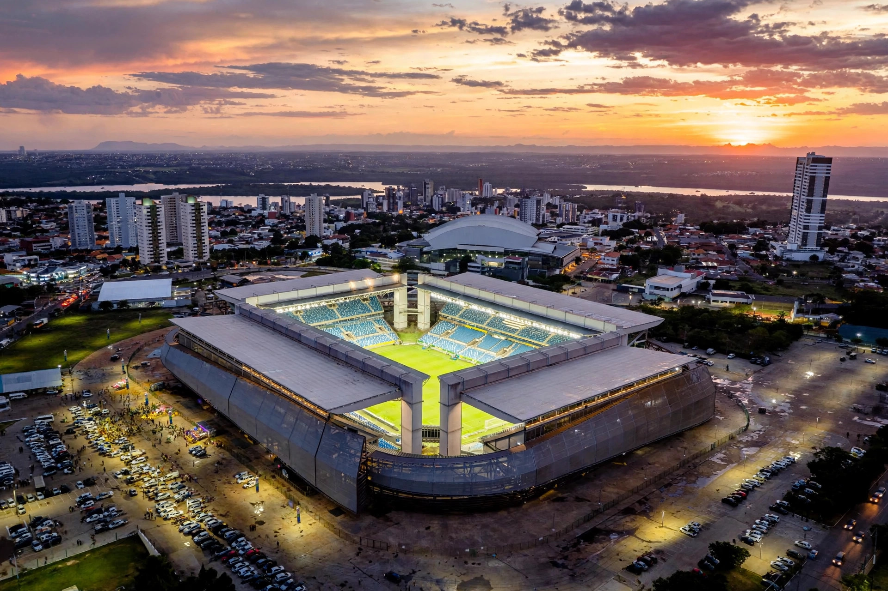

Cuiabá
Cuiabá is the capital of the Brazilian state of Mato Grosso, on the Cuiabá River in the Central-West region. One of Brazil's hottest state capitals, it is a gateway to the northern Pantanal and to Chapada dos Guimarães, and was a host city of the 2014 FIFA World Cup.
| Country | Brazil |
|---|---|
| State | Mato Grosso |
| Founded | 1 January 1719 |
| Population | about 650,000 (city) |
| Time zone | UTC−4 |

History
Cuiabá was founded in 1719 by bandeirantes after gold was discovered in the region, and it became a supply point for prospectors heading further west. It was made capital of Mato Grosso in the 19th century. In the 20th century road links to Brasília and the agricultural expansion of Mato Grosso revived its growth.
Geography and climate
The city lies near Brazil's geodesic centre, in a depression between the Chapada dos Guimarães plateau and the Pantanal lowlands. Its tropical climate brings very hot days, especially in the dry season, when temperatures can exceed 40 °C.
Economy and culture
Cuiabá is a trade and processing hub for the state's huge soy, maize, cotton and cattle output. Local culture features the viola de cocho instrument, cururu music and dishes based on Pantanal fish such as pacu and pintado.